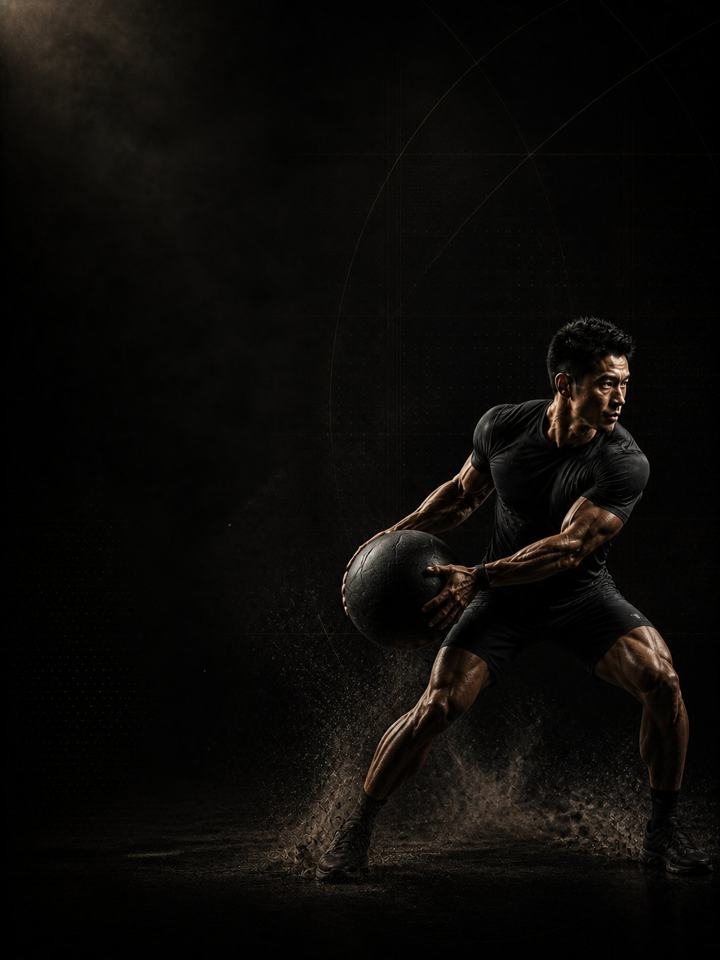

المصارعة والجوجيتسو · البناء
حوّل القوة التي بنيتها في كتلة الأساس إلى قوة تنتجها مرة بعد مرة، بعد أن تنفد قبضتك وينقطع نفَسك.
- مناسب لـلاعبي الجوجيتسو البرازيلي والمصارعة والفنون القتالية المختلطة
- أيام التدريب3 أيام في النادي أسبوعيًا حول رياضتك، و2 في أسابيع البساط الثقيلة
- مدة الجلسة48–60 دقيقة
- المعداتنادٍ متكامل، مع بار عقلة وزلّاجة وكيس رمل ومنشفة
- الصيغةملف PDF للهاتف، وكل تمرين مرتبط بفيديو توضيحي
لمن هذا البرنامج
للاعبي المصارعة والجوجيتسو الذين بنوا قاعدة من القوة، ويحتاجون الآن إلى أن تدوم. بنت كتلة الأساس قوة تستطيع أن تُظهرها مرة واحدة. أما المنافسة فتطلبها مرة بعد مرة، بعد أن تنفد قبضتك وينقطع نفَسك. هذه صفة مختلفة، وتُدرَّب بطريقة مختلفة: جهود شاقة متكرّرة مع تعافٍ غير مكتمل، وتمارين ثبات تدوم أطول من الوضعية، وتمارين قبضة تستمر بعد أن تبدأ الحرقة.
يبقى الرفع الثقيل، بحجم أقل، للحفاظ على ما بنته كتلة الأساس. وينتقل العمل الحقيقي في هذه الكتلة إلى إنتاج القوة وأنت متعب. هذه هي الكتلة التي تحدّد من سيبقى يتقدّم إلى الأمام في الدقيقتين الأخيرتين.
موقعه في السنة: الكتلة 2 من 4. الأساس، ثم البناء، ثم المنافسة، ثم الاستشفاء، بالترتيب. نفّذه بعد كتلة الأساس للمصارعة والجوجيتسو، في الفترة التي تسبق موسم المنافسات.
أسبوعك
ثلاثة أيام في النادي، تُرتَّب حول وقت البساط. لا رفع ثقيل أبدًا في الساعتين السابقتين لنزال تدريبي شاق.
خارج الموسم، 3 أيام في النادي
| الأحد | الاثنين | الثلاثاء | الأربعاء | الخميس | الجمعة | السبت |
|---|---|---|---|---|---|---|
| اليوم 1 | الرياضة | اليوم 2 | الرياضة | اليوم 3 | راحة | راحة |
خلال الموسم، يومان في النادي
| الأحد | الاثنين | الثلاثاء | الأربعاء | الخميس | الجمعة | السبت |
|---|---|---|---|---|---|---|
| اليوم 1 | الرياضة | اليوم 2 | راحة | الرياضة | مباراة | راحة |
في أسابيع البساط الثقيلة، نفّذ اليوم 1 واليوم 2 فقط. وأبقِ تمارين الرقبة والقبضة كل أسبوع مهما حدث.
كل جلسة تسير بالطريقة نفسها:
- الإحماء، 8–10 دقائق. التسلسل نفسه في كل مرة. تنشيط الأرداف والوركين والكتفين قبل أي حركة سريعة.
- السرعة والقدرة الانفجارية، 12–15 دقيقة. ضرب الكرة الطبية والرمي الدوراني وأرجحة الكيتل بل الثقيلة، مع تعافٍ كامل. تتوقّف المجموعة لحظة تراجع الجودة.
- القوة، 20–25 دقيقة. الرفعات المركّبة الثقيلة، مع دقيقتين إلى ثلاث دقائق بين المجموعات.
- تمارين الأنسجة، 8–10 دقائق. في النهاية، ولا تُحذف أبدًا.
على عكس كتلة الأساس، بعض هذه الكتلة مُتعِب عن قصد. لكنه بجرعة محسوبة، وفي وقت محدّد، وله نهاية، وتمارين اللياقة الشاقة تأتي دائمًا في نهاية الجلسة، لا قبل تمارين القوة أبدًا. الصعوبة المقصودة ليست كالصعوبة التي تأتي بالصدفة.
كيف تتقدّم الأسابيع الـ12
ثلاث مراحل، مدة كل منها أربعة أسابيع. الجهود المتكرّرة أولًا، ثم تمارين الثبات الطويلة، ثم إنتاج القوة في نهاية جلسة شاقة. تُثبَّت القوة الثقيلة عند ثلاث إلى أربع مجموعات من أربعة إلى ستة تكرارات، ولا يُضغط عليها، حتى يرتفع العمل على تكرار الجهد. وتمارين القبضة والرقبة موجودة في كل جلسة.
| الأسابيع 1–4 | الأسابيع 5–8 | الأسابيع 9–12 | |
|---|---|---|---|
| المرحلة | القدرة على تكرار الجهد | تحمّل الثبات | القوة تحت التعب |
| الهدف | جهود شاقة مع تعافٍ غير مكتمل، في نهاية الجلسة. تمارين القوة تأتي أولًا وتبقى ثقيلة. | ثبات طويل تحت الحمل، وهو النسخة النادية من الدفاع عن وضعية لمدة دقيقتين | أقصى قوة تُنتَج في حالة التعب، لأن إنتاج القوة وأنت متعب هو المهارة التنافسية |
| المجموعات الفعلية أسبوعيًا | 68 | 70 | 70 |
| متوسط الجهد | جهد 7.7/10، نحو تكرارين في الخزان | جهد 8.2/10، نحو تكرارين في الخزان | جهد 7.8/10، نحو تكرارين في الخزان |
| مرات الهبوط أسبوعيًا | 60 | 60 | 60 |
| الرميات أسبوعيًا | 20 | 50 | 0 |
المرحلة في لمحة
المجموعات التدريبية أسبوعيًا حسب ما تدرّبه. الخط المتقطع هو مستوى الجهد.
موقع هذه المرحلة في السنة التدريبية
نفّذ المراحل الأربع بالترتيب لتكتمل سنة تدريبية كاملة.
الجهد (RPE) تقييم من 1 إلى 10 لمدى صعوبة المجموعة. والتكرارات المتبقية في الخزان هي عدد التكرارات الجيدة الإضافية التي كنت تستطيع أداءها، فـ«نحو 2» تعني أنه يتبقى في الخزان تكراران.
أسابيع التخفيف: الأسبوعان 6 و12 أخف. تنفّذ نصف المجموعات بالأوزان نفسها، وتعيد الاختبار وأنت مرتاح.
القواعد التي تجعله ينجح
- القدرة الانفجارية والقوة قبل التعب، واللياقة بعده. الرميات وضرب الكرة والمجموعات الثقيلة تأتي أولًا. الزلّاجة والحبال وتمارين الحمل تأتي أخيرًا. اعكس ذلك، فتتحوّل كتلة القوة إلى جلسة إنهاك فيها بار.
- القوة يُحافَظ عليها، لا تُطارَد. ثلاث إلى أربع مجموعات ثقيلة لكل رفعة. إذا تراجعت رفعاتك خلال هذه الكتلة، فقد التهمتها تمارين اللياقة. احذف تمرين لياقة، لا مجموعة ثقيلة.
- تمارين القبضة تستمر بعد الحرقة. الأثر التدريبي في التعلّق بالمنشفة يكمن في الثواني العشر الأخيرة. حدّد زمنًا مستهدفًا واثبت حتى تبلغه، بدلًا من أن تترك عندما يبدأ الألم.
- تمرين ختامي حقيقي واحد في الأسبوع يكفي. جلسة واحدة فقط يجب أن تستنفدك فعلًا. وتكديس التمارين الختامية الشاقة هو ما يجعل الرياضيين يصلون إلى البساط منهَكين مسبقًا.
- تكوين الجسم يتغيّر ببطء. قِس وزنك أسبوعيًا في الظروف نفسها. هذا البرنامج لا يدعم إنقاص الوزن السريع.
- استخدم رقم القفزة اختبارًا للتعب. ثلاث وثبات طويلة من الثبات في بداية اليوم 1 كل أسبوع، واحتفظ بأفضلها. إذا كانت أقل من متوسطك المتحرّك بأكثر من 10%، فخفّف ذلك اليوم: احذف تمارين القدرة الانفجارية ومجموعة واحدة من كل رفعة.
- احسب مرات الهبوط، لا المجموعات فقط. كل قفزة وحجلة ووثبة وهبوط من ارتفاع هو هبوط تدفع أوتارك ثمنه، بما في ذلك حجلات الإحماء. رميات الكرة الطبية والعَدْو لا تُحسب هبوطًا. أبقِ الأسبوع تحت نحو 150 مرة هبوط في كتلة البناء، وتدريب رياضتك يُحسب فوق ذلك.
المصطلحات
- السنة التدريبية (الدورة الكبرى): أربع كتل بالترتيب (الأساس، والبناء، والمنافسة، والاستشفاء)، نحو 48 أسبوعًا.
- الكتلة التدريبية: 12 أسبوعًا. هذا البرنامج. تطوّر الكتلة الواحدة مجموعة واحدة من الصفات إلى مستوى محدّد.
- المرحلة (الدورة المتوسطة): 4 أسابيع. تستهدف كل منها صفة واحدة. وأربعة أسابيع اختيار لا قاعدة، فالمدة تتبع الهدف.
- الأسبوع التدريبي (الدورة الصغرى): حيث يرتفع الجهد، وتُضاف المجموعات، ويقع أسبوع التخفيف.
كيف تقيس تقدّمك
الوثب الطويل الأسبوعي يتابع التعب، وتعيد الاختبار وأنت مرتاح في أسبوعَي التخفيف، 6 و12.
شكل التقدّم الجيد
- الأسابيع 1–4: العمل المتكرّر درس في التواضع، والتراجع بين أول جهد وآخره كبير. هذه نقطة البداية، لا حكم عليك.
- الأسابيع 5–8: يطول الثبات، وتتوقّف الجولات عن الانهيار عند النقطة نفسها.
- الأسابيع 9–12: يبدو آخر جهد في الجلسة مثل أولها.
الرقم المهم ليس أفضل جهد لديك، بل الفرق بين أفضل جهد وآخره.
احترم الأسبوع
احسب كل شيء: المباريات، وتدريب رياضتك، والنادي، والنوم. القفزات المفاجئة في حمل التدريب الأسبوعي هي أكثر ما يتنبّأ بالإصابة في الرياضة غير الاحترافية. في أسبوع رياضي ثقيل، احذف جلسة نادٍ أو اختصر تمارين القدرة الانفجارية، ولا تحذف الرياضة والتعافي معًا أبدًا. احمِ 7–9 ساعات من النوم. إنه أقوى أداة أداء لديك، وأرخصها.
الأدلة العلمية
كل برنامج في المكتبة مبني على أبحاث منشورة، وقوة تلك الأبحاث مذكورة صراحةً لا ضمنًا. وحيث تكون الأدلة محدودة، تقول الصفحة ذلك.
| النتيجة | المصدر | ما لا تُظهره |
|---|---|---|
| تدريب القوة يخفض الإصابات الرياضية إلى أقل من ثلث معدلها في المجموعة الضابطة. أما الإطالة فلا تخفضها. | Lauersen, Bertelsen & Andersen, British Journal of Sports Medicine 2014. Meta-analysis of 25 randomised controlled trials, 26,610 participants. PMID 24100287 | نسبة الخطر 0.32 لتدريب القوة و0.96 للإطالة. تفاوتت التجارب كثيرًا، ولم تكن الجرعة موحّدة. |
| البرامج التي تتضمّن تمرين نورديك للعضلات الخلفية للفخذ تخفض إصابات العضلات الخلفية للفخذ إلى النصف تقريبًا. | van Dyk, Behan & Whiteley, British Journal of Sports Medicine 2019. Meta-analysis, 15 studies, 8,459 athletes. PMID 30808663 | نسبة الخطر 0.49، أو 0.55 بعد استبعاد الدراسات الثماني ذات خطر التحيّز المرتفع. وهي تقيس البرامج التي تتضمّن التمرين، لا التمرين وحده. |
| تمرين واحد للعضلات الضامّة، ثلاث مرات أسبوعيًا قبل الموسم ومرة أسبوعيًا خلاله، خفّض مشكلات الفخذ الداخلي المُبلَّغ عنها بنسبة 41%. | Harøy et al., British Journal of Sports Medicine 2019. Cluster-randomised controlled trial, 35 teams, 652 male footballers. PMID 29891614 | نسبة الأرجحية 0.59. مشكلات أبلغ عنها اللاعبون أنفسهم، في كرة القدم شبه الاحترافية للرجال فقط. ولم تُكرَّر الدراسة على النساء أو في رياضات أخرى. |
| أي وصفة تدريب معقولة أفضل من عدم التدريب. الأحمال الأثقل تحتل المرتبة الأعلى للقوة، والمجموعات المتعددة تحتل المرتبة الأعلى لحجم العضلات. | Currier, McLeod, Banfield et al., British Journal of Sports Medicine 2023. Network meta-analysis, 178 strength and 119 hypertrophy studies. PMID 37414459 | كانت الفروق بين الوصفات صغيرة، وكلها نجحت. |
ماذا بعد
بعد 12 أسبوعًا:
- الكتلة التالية في السنة: المصارعة والجوجيتسو · المنافسة
- منطقة واحدة تحتاج إلى عمل: السلسلة التصحيحية
قبل الشراء: احصل على موافقة طبية أولًا إذا
- كان لديك ألم في الصدر، أو ضيق تنفس غير معتاد، أو خفقان، أو دوخة أثناء المجهود.
- كان لديك ضغط دم مرتفع غير منضبط، أو مرض قلبي معروف، أو خضعت لعملية جراحية مؤخرًا.
- كنتِ حاملًا أو بعد الولادة بفترة قصيرة. احصلي على موافقة وبرنامج مخصص أولًا.
- كان لديك ألم حاد في مفصل واحد لا يهدأ. ابدأ ببرنامج أكسس التصحيحي المناسب.
هذا البرنامج إرشاد عام للياقة البدنية، ولا يغني عن التقييم الطبي.